<!doctype html public "-//w3c//dtd html 4.0 transitional//en">
<html>
<head><meta name="viewport" content="height=device-height,width=device-width">
   <meta http-equiv="Content-Type" content="text/html; charset=iso-8859-1">
   <meta name="Generator" content="Microsoft Word 97">
   <meta name="GENERATOR" content="Mozilla/4.73 [en] (WinNT; I) [Netscape]">
   <meta name="Author" content="Jeffrey Mishlove">
   <title>The Roots of Consciousness: Theory, The Biological Perspective</title>

<!-- google-analytics.com  START  (aync)-->
<script type="text/javascript">

  var _gaq = _gaq || [];
  _gaq.push(['_setAccount', 'UA-15825841-1']);
  _gaq.push(['_trackPageview']);

  (function() {
    var ga = document.createElement('script'); ga.type = 'text/javascript'; ga.async = true;
    ga.src = ('https:' == document.location.protocol ? 'https://ssl' : 'http://www') + '.google-analytics.com/ga.js';
    var s = document.getElementsByTagName('script')[0]; s.parentNode.insertBefore(ga, s);
  })();

</script>
<!-- google-analytics.com  END  -->

<!-- Histats.com  START  (aync)-->
<script type="text/javascript">var _Hasync= _Hasync|| [];
_Hasync.push(['Histats.start', '1,1087503,4,0,150,30,00000000']);
_Hasync.push(['Histats.fasi', '1']);
_Hasync.push(['Histats.track_hits', '']);
(function() {
    var hs = document.createElement('script'); hs.type = 'text/javascript'; hs.async = true;
    hs.src = ('http://s10.histats.com/js15_as.js');
    (document.getElementsByTagName('head')[0] || document.getElementsByTagName('body')[0]).appendChild(hs);
  })();</script>
<noscript><a href="http://www.histats.com" target="_blank"></a></noscript>
<!-- Histats.com  END  -->

</head>
<body>
&nbsp;
<center><table BORDER=0 COLS=1 WIDTH="600" >
<tr>
<td>
<center><font face="Arial,Helvetica"><font size=+2>The Biological Perspective</font></font></center>

<p><font face="Arial,Helvetica">In the Introduction, I discussed the evolution
of organized matter from the photon through particles, atoms and molecules
to living cells which begin to differentiate in structure and function
forming a wide variety of tissues and organs that play a specialized function
in the human body. It is reasonable to assume all these levels of organization
including the whole human being play a role in shaping consciousness. Particularly
important are the nervous system, comprising brain and spinal cord, and
the endocrine system, comprising a number of ductless glands that secrete
hormones into the bloodstream. Many biological scientists today implicitly
believe that these structures not only shape consciousness, but are actually
the source of conscious awareness. This view is known as the biological
identity theory.</font>
<br>&nbsp;
<p><b><font face="Arial,Helvetica">The Nervous System</font></b>
<p><font face="Arial,Helvetica">Neuron cells are the principle units of
the nervous system. Their function is to conduct nerve impulses transmitting
information. The twelve billion neurons in our bodies vary greatly in size
and shape; however they all have two general parts: a cell body and fibers.
The cell body contains structures that keep the neuron alive and properly
functioning. The neural fibers are of two classes: dendrites stimulated
by neighboring neurons or physical stimuli; and axons, which transmit impulses
to other neurons or to an effector, such as a muscle or gland.</font>
<p><font face="Arial,Helvetica">The process by which pulses transmit across
the neural membrane is electrochemical. The pulses are caused by rapid
and reversible changes in the permeability of the membrane to certain ions.
The resulting flows of ions across the membrane give rise to electrical
impulses, which can be detected and recorded with various instruments.
The size of the nerve impulses and the speed with which they travel are
unique to each particular neuron and do not relate to the strength of the
stimuli that initiated them. Firing thresholds will vary with time from
neuron to neuron depending on many factors; however once the threshold
is reached, the electrochemical changes that cause the impulse proceed
to completion. Therefore, information about any stimulus is carried by
(1) the frequency of nerve firing and (2) by the number of particular fibers
carrying impulses, and not by the strength of any single impulse. This,
incidentally, is the same on-off principle by which information is coded
in a digital computer. Some nerves transmit as many as 1000 impulses each
second.</font>
<center>
<p>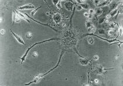
<br><b><font face="Arial,Helvetica"><font size=-1>Multi-Polar Neuron</font></font></b>
<p>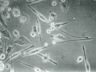
<br><b><font face="Arial,Helvetica"><font size=-1>Bipolar Neurons</font></font></b></center>

<p><font face="Arial,Helvetica">Neurons are stimulated to fire by either
sensory receptors or other neurons. Nerve impulses are transmitted from
one neuron to another or from a neuron to a muscle or gland across an important
gap known as a synapse. The whole region including the bouton on the end
of the axon on one neuron, the gap, and the post-synaptic membrane of the
adjoining cell, can be called the synaptic region (the circled area in
the multi-polar neuron photograph). Information is transmitted across the
synaptic gap by enzymes delicately released from little spheres in the
bouton called vesicles. The information is received at the postsynaptic
membrane, which is generally either excited or inhibited by these chemicals
depending again on many factors, such as the particular combination of
enzymes transmitted across the synapse or the interaction with the electro-magnetic
environment around the body.</font>
<p><font face="Arial,Helvetica">If the post-synaptic membrane is stimulated
by an inhibiting neurotransmitter its firing threshold will become higher.
An excitatory neurotransmitter will lower the firing threshold of a given
neuron, causing it to fire more often. The actual firing threshold of a
neuron is variable and is often determined by the combined influence of
hundreds of synapses.</font>
<center>
<p>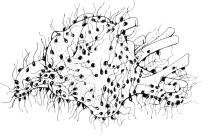
<br><b><font face="Arial,Helvetica"><font size=-1>Neuron cell body with
synapses from other neurons</font></font></b></center>

<p><font face="Arial,Helvetica">Thus the synaptic aspect of neural transmission
is not an all or none affair, and may be thought of as the analog or continuous
aspect of the human bio-computer. Some nerves actually loop back upon themselves
to form reverbrating circuits which may be the neural basis for memory
storage.</font>
<p><font face="Arial,Helvetica">The nervous system itself is quite complex
and may be divided into several different structures.</font>
<p><font face="Arial,Helvetica">The peripheral nervous system comprises
those neurons or parts of neurons that lie outside the bony case formed
by the skull and the spine. The somatic nerves of this system mediate the
sensory inputs and muscle movements that we are consciously aware of during
waking hours.</font>
<p><font face="Arial,Helvetica">The autonomic part of the peripheral system
regulates many functions--such as the heart rate, blood pressure, endocrine
and digestive processes of which we are not normally conscious, but which
can be brought under conscious control through bio-feedback and yoga techniques.
The sympathetic aspect of the autonomic system generally comes into play
when we experience strong emotions, while the parasympathetic system tends
to be active when we are calm and relaxed. The cell bodies of the autonomic
nervous system, as well as of the sensory nerves of the somatic system,
gather together in ganglia alongside the spinal column, and at other points
in the body. The cell bodies of somatic motor-nerve fibers, however, are
located inside the central nervous system.</font>
<p><font face="Arial,Helvetica">The central nervous system is organized
into two principle parts, the spinal cord and the brain. The spinal cord
serves as a conduction path to and from the brain and also as an organ
for effecting reflex action. The brain seems to play an important role
in all the complex activities constituting consciousness -- thinking, perception,
learning, memory, etc. The three main structures of the brain are known
as the hindbrain, the midbrain, and the forebrain.</font>
<center>
<p>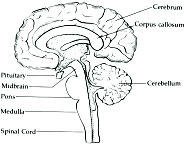
<br><b><font face="Arial,Helvetica"><font size=-1>Cross-section of the
human brain</font></font></b></center>

<p><font face="Arial,Helvetica">Within the hindbrain lie the cerebellum,
the pons, and medulla. These neural centers regulate breathing, heartbeat,
motor coordination, posture, and balance. They are also involved in mediating
nerve impulses from the body to the higher brain centers.&nbsp;</font>
<p><font face="Arial,Helvetica">The midbrain contains numerous nerve fiber
tracts and neural centers regulating body changes in response to visual
and auditory stimulation.</font>
<p><font face="Arial,Helvetica">The forebrain has reached its greatest
development in humans and other highly evolved animals, such as porpoises.
It comprises the cerebrum, which is covered by the cerebral cortex, the
thalamus, and a group of closely related structures forming the limbic
system. These parts of the brain mediate our inner mental and emotional
processes.</font>
<p><font face="Arial,Helvetica">The sensations in your mind are mapped
out on the cerebral cortex of your brain, which mediates your conscious
sensory and motor functions, as well as complex perceptual processes.</font>
<center>
<p>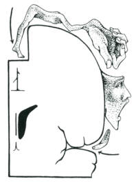
<br><b><font face="Arial,Helvetica"><font size=-1>Sensory-motor mapping
on the human cortex</font></font></b></center>

<p><font face="Arial,Helvetica">One method of researching cerebral functioning
has been to electrically stimulate the exposed cortex of human subjects,
under local anesthesia, who could then report on their experiences. By
stimulating certain areas various types of sensations, movements and thought
patterns can be evoked. Another method of research is to observe the functioning
of individuals who have had portions of their brain removed or damaged.
Especially in the case of young children, removing a portion of the brain
does not seem to impair the functioning ofthe mind.</font>
<p><font face="Arial,Helvetica">One important line of research has indicated
the two hemispheres of the cerebral cortex function differently. The speech
areas of the human cortex are almost always located on the left hemisphere,
regardless of whether the person is right or left handed. Several researchers
have suggested that the mind's logical and linear functions are associated
with the left hemisphere; while the more kinesthetic, pre-verbal, intuitive
properties of consciousness derive from the right hemisphere. The particular
functions each hemisphere assumes may vary with different individuals.
However, the capacity for two uniquely different modes of consciousness
within each individual seems well-established. Important differences also
seem to exist between the intellectual cortex and other deeper, emotional
layers of the forebrain.</font>
<p><font face="Arial,Helvetica">Those parts of the brain most attuned to
the body's needs and emotional states are the limbic system and the hypothalamus.
The hypothalamus is a bundle of nerve bodies, about the size of a peanut,
located just above the roof of the mouth. It contains several centers that
mediate the excitement and inhibition of the hunger, thirst, and sexual
drives, as well as emotional arousal. The activity of these centers is
in turn regulated by such factors as hormones in the blood and signals
from other parts of the brain, including the cortex. Certain areas in the
hypothalamus and limbic system, when stimulated, can be a source of enormous
pleasure for the body.</font>
<p><font face="Arial,Helvetica">In conjunction with the reticular activating
system, the hypothalamus is also involved in the mediation of sleep and
arousal states.</font>
<p><font face="Arial,Helvetica">By attaching electrodes to the skin of
the head, psychologists are able to measure the electrical activity of
the brain as a whole. Brain waves thus measured can generally be correlated
with different states of consciousness ranging trom the alert waking state,
to drowsiness, hypnagogic imagery, meditation, sleep, and dreaming. Individuals
can learn to control their brain waves, and also their internal states
of consciousness through techniques providing them with immediate feedback
on their physiological state. Researchers suggest there may be no biological
functions that cannot be brought under conscious control in this fashion.
Many individuals are able to develop this control through simple techniques
of yoga, hypnosis, and meditation.</font>
<br>&nbsp;
<p><b><font face="Arial,Helvetica">The Endocrine System</font></b>
<center>
<p>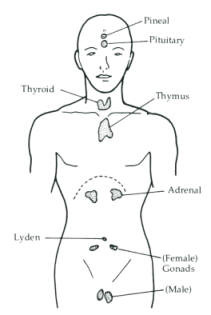
<br><b><font face="Arial,Helvetica"><font size=-1>Location of the major
endocrine glands in the body</font></font></b></center>

<p><font face="Arial,Helvetica">The endocrine system, which comprises glands
secreting powerful hormones into the bloodstream, is one of the most interesting
areas of autonomic functioning. Our personality and character is profoundly
effected by our hormone balance. The major endocrine glands are the pituitary
and pineal glands in the brain, the thyroid and parathyroids in the throat,
the thymus gland located near the heart, the adrenal glands, and the sexual
glands. To a lesser degree, other parts of the body, including neurons,
also secrete hormones into the bloodstream. The endocrine system is self-regulating
in that hormone secretion from any gland is activated in part by other
hormones in the bloodstream. The hypothalamus also plays an important role
in stimulating certain hormone secretions from the pituitary gland.</font>
<p><font face="Arial,Helvetica">The pituitary is often called the "master
gland" because it secretes a number of hormones that stimulate or inhibit
secretion in the other glands of the body. It also produces hormones that
regulate the growth rate of children and awaken the sexual glands at puberty.</font>
<p><font face="Arial,Helvetica">The pineal gland produces several substances
including a hormone known as 5-hydroxytryptamine or serotonin.</font>
<center>
<p>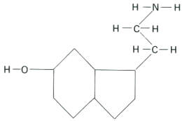
<br><b><font face="Arial,Helvetica"><font size=-1>Serotonin</font></font></b></center>

<p><font face="Arial,Helvetica">Serotonin is of the same chemical series
of indole alkaloids that includes psychedelic drugs such as LSD-25, psilocybin,
D.M.T. and bufotenine.</font>
<center>
<p>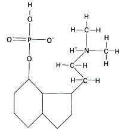
<br><b><font face="Arial,Helvetica"><font size=-1>Psilocybin</font></font></b></center>

<p><font face="Arial,Helvetica">The exact mechanism by which serotonin
might effect consciousness or behavior is not well understood by scientists
today. Research findings are paradoxical as serotonin is known to affect
different parts of the body and brain in different ways, depending on the
proportions and combinations of other hormones and enzymes present during
the interaction. Generally speaking serotonin is recognized as a neural
inhibitor in the brain. The stores of serotonin in the brain are depleted
by reserpine, a tranquilizer, and augmented by iproniazid, a mood elevator.
Large amounts are present in the limbic system and the hypothalamus. Smaller
concentrations occur in the cortex and the cerebellum. Ablation of the
nerve network in the brain called the raphe system, which contains considerable
amounts of serotonin, is known to produce permanent insomnia. The ingestion
of serotonin is unlikely to effect the central nervous system as it does
not cross the blood-brain barrier. If it did, its main result would be
to put one to sleep. Most of the serotonin in the brain is in the reticular
activating system where it plays an important role in the sleep-wake cycle.
When serotonin levels in the r.a.s. rise, the brain goes into deep sleep.
Other studies have shown greatly increased amounts of serotonin in the
brains of psychotic patients. According to biologist John Bleibtrau, "Bananas
and plums abound in serotonin; so do figs, and among species of figs none
is richer in serotonin than the ficus religiosa, known in India as the
Bo tree, under which the Buddha reportedly sat when he became enlightened."
Thus the hormone produced by the pineal gland makes possible emotions,
perception, sleep and wakefulness, and orientation to conventional reality.</font>
<p><font face="Arial,Helvetica">The thyroid gland produces a hormone known
as thyroxin, which controls the metabolic rate at which the body produces
energy. Whether a person is slow and sluggish or extremely active is influenced
by this hormone. (Occult systems often associate this gland with the throat
chakra).</font>
<p><font face="Arial,Helvetica">The hormones produced in the thymus gland
regulate the process by which the body learns to differentiate its own
proteins from foreign substances which may be harmful to it. By this process
antibodies are manufactured that react only against invading antigens and
not to the myriad similar substances necessary to the body. One could think
of the thymus gland as being closely related to the body's sense of organic
identity.&nbsp;</font>
<p><font face="Arial,Helvetica">The adrenal glands, located in the back
of the body above the kidneys, secrete the hormones epinephrine and norepinephrine,
which are related to states of strong emotion. The sympathetic nervous
system can stimulate the adrenal glands and the action of the adrenal hormones
produced generally intensifies the actions of the sympathetic system throughout
the body. It helps mobilize sugar into the blood and makes more energy
available to the brain and muscles. It stimulates the heart to beat faster
and also constricts the peripheral blood vessels, thus raising blood pressure.&nbsp;</font>
<p><font face="Arial,Helvetica">The sex glands or gonads are the testes
in men and the ovaries in women. The hormones they produce are responsible
for the marked physical changes that take place during puberty -- the beginning
of menstruation, growth of the breasts, voice changes and beard and body
hair growth.</font>
<p><font face="Arial,Helvetica">It is important to recognize that the complex
activity of manufacturing the hormones and enzymes, which regulate both
neural transmission and the endocrine system, is guided by the subtle programming
coded into the genetic structure of each cell in the body. One can view
these three modes of physiological functioning as communication systems.
Neural transmission provides rapid communication for the whole body --
requiring fractions of a second for feedback. The endocrine system provides
inter-organ, slow communication -- requiring minutes to hours for feedback.
While the genetic structure can be seen as an organism-environment communication
system requiring many generations for feedback.</font>
<p><font face="Arial,Helvetica">It is recognized that manufacturing protein
substances within the cells is guided by the DNA codes; however scientists
have yet to find a satisfactory explanation for the development of tissues,
organs, and whole organisms.&nbsp;</font>
<br>&nbsp;
<p><b><font face="Arial,Helvetica">Melanin: The Organizing Molecule</font></b>
<p><font face="Arial,Helvetica">Building on the "reflexive universe" model
of Arthur M. Young (to be presented at the end of Section IV), physician
Frank Barr hypothesizes that neuromelanin, a complex category of light
and sound absorbing molecules, is responsible for our experience of a continuum
of mental states. It is the molecule, he claims, that coordinates interactions
between the endocrine and nervous systems. Barr summarizes his theory:</font>
<p><font face="Arial,Helvetica">Neuromelanin -- through 1) its photon-phonon-(exciton)-(soliton)
interactions; 2) its semi- (and possibly super-) conductive capacities;
3) its cation exchange flow; 4) its continuous free radical signal; 5)
its neuroglial direct current; 6) its potentially diverse covalent modifications;
7) its potential to trigger reversible enzyme cascade amplifications; etc.
-- could precisely regulate the neuroendocrine system. By meticulous phase-timing,
neuromelanin could coordinate the synthesis, release, uptake, destruction,
modification, and/or recycling of the various neuroamines and peptides
throughout the brain.</font>
<br>&nbsp;
<p><b><font face="Arial,Helvetica">The Temporal Lobe Factor in Psychic
Experience</font></b>
<p><font face="Arial,Helvetica">Psychologist Michael A. Persinger of Laurentian
University in Canada that, whether psi experiences are real or imagined,
the temporal lobes of the brain play a significant role in mediating such
experiences. Deep within the temporal lobes are the mesiobasal structures,
specifically the hippocampus (often referred to as the gateway to memory)
and the more anterior, amygdala (the mediator of affect and meaning).&nbsp;</font>
<p><font face="Arial,Helvetica">The temporal lobes have diverse structures
and multiple functions including memory, the sense of self in space and
time, the attribution of meaning and emotional significance, audition,
organization of complex visual patterns, smell, and language.</font>
<p><font face="Arial,Helvetica">Persinger suggests that psi information
signals are carried on extremely low electromagnetic frequencies to which
temporal lobe structures are sensitive. He describes his approach to understanding
psychic functioning in the temporal lobes:</font>
<p><font face="Arial,Helvetica">The deep structures of the temporal lobes
are the most electrically unstable portions of the human brain. This instability
is really a sensitivity, due to the microcircuitry of the neurons; it allows
the phenomena of declarative memory and its consolidation to occur. However,
there are consequences to this sensitivity. The temporal lobe structures
are prone to electrically active foci...Local and paroxysmal discharges
can even be produced by specific memories and biofrequency (extremely low
frequency) magnetic fields that penetrate brain tissue.</font>
<p><font face="Arial,Helvetica">The contribution of temporal lobe processes
to psi phenomena have two important implications. Firstly, the phenomenological
characteristics of psi experiences, especially spontaneous ones, should
be dominated by the functions of the temporal lobes. Such evidence is clearly
seen in the propensity for spontaneous psi experiences to involve visuoauditory
modalities, dreams (modulated via the hippocampus), and intense affect
(the amygdala) that attributes the experience with intense, personal meaningfulness.
Secondly, the electrical lability means that many other stimuli could both
compete for neural substrates that facilitate psi experiences and stimulate
psi-like experinces, that is generate pseudo-psi or quasi-psi.</font>
<p><font face="Arial,Helvetica">Persinger also notes that no other brain
condition simulates spontaneous psi experiences as closely as temporal
lobe epilepsy. This disorder is associated with brief paroxysmal electrical
discharges within the mesiobasal regions of the temporal lobe. If the discharge
remains within one lobe and does not propagate to motor regions, there
are no convulsions. An observer might not realize the person is experiencing
a seizure.</font>
<p><font face="Arial,Helvetica">However, there are often experiential phenomena
that are associated with such discharges which resemble the major manifestations
of spontaneous psi experiences. These include deja vu, depersonalization,
out-of-body types of experiences, a sense of a presence, time distortions,
an internal "hearing and knowing," anxiety or panic, experiences of floating
or falling, shapes in the peripheral visual field (especially the upper
quadrant), and complex visual "hallucinations." Electrical stimulation
studies have demonstrated that these experiences are specific to temporal
lobe structures.,</font>
<p><font face="Arial,Helvetica">People who have chronic electrical discharges
within temporal lobe structures also develop a behavioral pattern which
overlaps with the profile of persons interested in psychic and "new age"
matters. These patterns include: a widening of affect, such that unusual
events acquire special personal meaning; an interest in philosophy and
mysticism; a sense of personal destiny; episodes of delusions; and a desire
to either record one's experiences or to communicate one's beliefs.</font>
<p><font face="Arial,Helvetica">Following up on his interest in geomagnetic
effects upon consciousness (which will be discussed further), Persinger
has assembled a body of data suggesting a marked similarity between the
diurnal distribution of limbic epilepsy and psi experiences. The number
of temporal lobe seizures (with observable motor activity) were plotted
for each one hour interval from a population of about 100,000 events collected
before anticonvulsants were introduced into medicine. Seizures were most
prominent between 0200 and 0400 hours local time, with a secondary peak
around 2200 hours.&nbsp;</font>
<p><font face="Arial,Helvetica">For comparison, the percentage of total
cases per hour for all of the histories of spontaneous telepathy concerning
death and crises to significant others from the Society for Psychical Research
collections that contained the hour of the occurrence (open circles).,
In addition, Persinger collected similar cases that contained this information
as reported in <i>Fate</i> Magazine. A statistical analysis demonstrated
no significant difference between the well-documented SPR collections and
the less documented Fate cases -- suggesting the possibility of a similar
mechanism effecting their occurrence.&nbsp;</font>
<p><font face="Arial,Helvetica">Peak displays of spontaneous experiences
concerning death and crises to significant others occurred between 0200
and 0400 hrs, with a secondary peak around 2100 to 2300 hours. However,
unlike the epileptic events, there was increased incidence of ostensible
psi experiences around 1600 hours.</font>
<p><font face="Arial,Helvetica">The partial similarity of the hourly distribution
of the incidence of both epileptic episodes and ostensible psi experiences
is an example of the commonality of the two phenomena. They appear to exist
along a continuum of temporal lobe lability or sensitivity. They may both
involve local microseizuring that generate experiential phenomena without
overt motoric displays. However, Persinger claims that "it would be incorrect
to assume that psi experiences are a form of limbic epilepsy." One must
also take into account that normal microseizuring occurs every night, during
the dream or REM (rapid eye movement) state. The most important difference
from the perspective of psi research, of course, is the trigger that evokes
the experience.</font>
<p><font face="Arial,Helvetica">Persinger has verified the existence of
a temporal lobe continuum of activity in normal individuals who show no
signs of epilepsy or abnormal personality. The more frequent the number
of temporal lobe signs a person reports, Persinger suggests, the more likely
they are to report spontaneous psi experiences and to score well in laboratory
tests of psi.</font>
<br>&nbsp;
<p><b><font face="Arial,Helvetica">The Ecology of Consciousness</font></b>
<p><font face="Arial,Helvetica">One of the most interesting new areas of
science concerns electrostatic interactions between biological organisms
and the environment. I have already indicated that the electro-chemical
nature of neural transmission plays an important role in mediating information-transfer
throughout the body. Now we will take a look at some of the more subtle
extensions of our biological functioning:</font>
<p><font face="Arial,Helvetica">Our bodies are influenced -- in ways often
overlooked -- by the existence of small ions in the atmosphere. The research
of scientists such as Albert P. Krueger are sometimes dismissed as insignificant
in the face of gross environmental pollution, however they seem to show
important implications for consciousness:</font>
<center>
<p>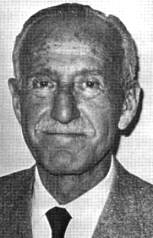
<br><b><font face="Arial,Helvetica"><font size=-1>Albert P. Krueger</font></font></b></center>

<p><font face="Arial,Helvetica">Air ion formation begins when enough energy
acts on a gaseous molecule to eject an electron. Most of this energy comes
from radioactive substances in the Earth's crust, and some from cosmic
rays. The displaced electron attaches itself to an adjacent molecule, which
becomes a negative ion, the original molecule then becoming a positive
ion...natural gas or water molecules cluster about the ions to form small
air ions of four types: H+(HzO)n, (HaO)+(HzO)n, Oz(HzO)n and OH-(HzO)n,
where n is a small number.</font>
<p><font face="Arial,Helvetica">In normal clean air over land, there are
1500 to 4000 ions/cubic centimeter. But negative ions are more mobile and
the earth's surface has a negative charge, so negative ions are repelled
from the earth's surface. Thus the normal ratio of negative to positive
ions is 1.2 to l.</font>
<p><font face="Arial,Helvetica">Man often encounters very low concentrations
of ions, and modern city life increases the ratio of positive to negative
small air ions. A 14-day study in 1971 by B. Maczynski (<i>lnt. J. Biometeor</i>,
vol. 15, p. 11) in an office containing four people showed that the small
air ion concentration dropped as the day went on, falling on average to
only 34 positive ions and 20 negative ions/cm1. And a test at a light industry
area of San Francisco by J. C. Beckett (<i>J. Amer. Soc. Heating, Refrig,
and Air Cond</i>., vol 1- p 47) showed a small ion count of less than 80
ions/cm3. In both cases the number of physiologically inert large ions
rose considerably-apparently small ions react with dust and pollutants
to form large ions.</font>
<p><font face="Arial,Helvetica">People travelling to work in polluted air,
spending eight hours a day in offices or factories, and living their leisure
hours in urban dwellings, inescapably breathe ion-depleted air for substantial
portions of their lives. There is increasing evidence that this ion depletion
leads to discomfort, enervation and lassitude, and loss of mental and physical
efficiency. This syndrome appears to develop quite apart from the direct
toxic effects of the usual atmospheric pollutants. It occurs in the absence
of such pollutants, in the "clean" air of rural schools or libraries which
happen to be ion-depleted due to special factors which remove ions, such
as stray electrical fields. On the other hand, evidence is accumulating
that substantial increases in ions can have highly beneficial effects,
from relieving the pain of burns to promoting plant growth.</font>
<p><font face="Arial,Helvetica">Experiments have shown that negative ions
promote the healing rate of animals with severed peripheral nerves, skin
lacerations, burns, and post-operative discomfort. They are known to greatly
enhance cell proliferation, and under certain circumstances they are known
to raise the critical fusion frequency threshold (the point at which a
flickering light appears constant) in humans and decrease visual reaction
time.</font>
<p><font face="Arial,Helvetica">In several instances both positive and
negative ions are shown to have similar effects. High doses of either type
of ion have been shown to be lethal to bacteria. High densities of negative
or positive ions increase, on the other hand, the maze learning ability
of rats. Low concentrations of positive and negative ions are known to
produce fewer alpha frequency brain waves in human beings. High concentrations
of ions tend to disrupt alpha frequencies in a more variable fashion. In
rats, varying outputs of ions in either polarity will produce measurable
changes in urine, defecation, sleeping period, respiration rate, and attacks
on the aluminum foil ground plate used to generate the ions. In general,
oddly enough, the lowest ion concentrations were the most effective in
evoking (or provoking) such changes.</font>
<p><font face="Arial,Helvetica">Particularly interesting is Kreuger's demonstration
of the effects small air ions have on the levels of serotonin in the blood
and in the brain. He has shown that in mice positive ions raise blood levels
of serotonin and negative ions depress them. In these rodents' brains,
low dosages as well as high dosages of both negative and positive ions
produced significant decreases in serotonin-as compared to normal atmospheric
levels. This disparity can be accounted for by the fact that serotonin
does not cross the blood-brain barrier. (You will recall the important
role brain-serotonin plays in mediating many facets of consciousness.)
Negative ions are also known to play a role in speeding up plant growth
and in increasing resistance to influenza.</font>
<p><font face="Arial,Helvetica">Research from Israel dramatically illustrates
the link between atmospheric ionization, physiological levels of serotonin,
and consciousness. In many parts of the world, observers have noted that
certain "winds of ill repute" have a discomforting effect upon individuals
-- the Santa Ana winds in Southern California, the Chinook winds in Canada,
the Mistral winds of France, the Zonda winds of Argentina, Sirocco winds
of Italy, and the Sharav or Chamsin winds of the Near East. Symptoms such
as sleeplessness, irritability, tension, migraines, nausea and vomiting,
scotoma (diminished vision), amblyopia (dimness of vision), and edemata
(swelling of tissue) have been noted. These symptoms resemble the effects
of hyper-production of serotonin. In weather-sensitive people, urinary
serotonin output showed a steep rise two days before the onset of the Sharav
winds in Israel. They remained high the following day and dropped only
after the winds began. In addition to increase in positive ionization,
the salient meteorological features of these winds are a rapid rise in
temperature and a decrease in humidity. These factors by themselves, however,
fail to account for the physiological changes noted. The negative psychological
and physiological effects are attributed to the rise in the ratio of positively
charged ions in the atmosphere preceeding the onset of the winds. It is
interesting to note in this connection that the word doldrums has two dictionary
meanings: (1) dullness; a state of listlessness and boredom, (2) a part
of the ocean near the equator abounding in calms, light winds, and squalls.&nbsp;</font>
<p><font face="Arial,Helvetica">On the other hand, in locations where (-)
air ion densities are relatively high, such as near water falls, the general
effect of the local environment is tranquilizing and conducive to good
health. It is no wonder then that scientists in the know, such as Dr. Albert
Krueger in Berkeley, use air filters and negative ion generators at all
times to restore the environment around them to its natural unpolluted
and electrostatically balanced state.</font>
<p><font face="Arial,Helvetica">Stepping into Krueger's laboratory in the
Life Science Building at the University of California, Berkeley, and breathing
deeply was like all of a sudden being out in the crisp, clean air of a
mountain wilderness.</font>
<p><font face="Arial,Helvetica">Closely related to the electrostatic and
ionic phenomena of the biosphere, are electromagnetic phenomena that also
play an important role in the ecology of consciousness.</font>
<p><font face="Arial,Helvetica">The magnetic field of the earth extends
around the planet like a large donut and is probably created by the flow
of molten metals in the earth's core. The average intensity of this field
is about 0.5 gauss and it pulses at frequencies ranging from 0.1 to 100
cycles per second. The predominant frequency range of magnetic pulsations,
known as the Schumann resonance, is around 7.5 cycles per second. Several
researchers have suggested that this resonance in the geomagnetic and electrostatic
field has an effect upon the human nervous system-and upon consciousness
itself.</font>
<p><font face="Arial,Helvetica">The Schumann resonance is an effect due
to the fact that an electromagnetic wave (traveling at the speed of light,
186,000 miles a second) goes around the earth's 25,000 mile circumference
around 7.5 times a second. Perhaps it is useful to think of the 7.5 c.p.s.
brain wave frequency as the boundary between alpha waves and theta waves.
If that frequency predominates in your brain waves you are generally in
the hypnogogic or hypnopompic state just on the border of wak`ng up or
falling asleep. The theta wave is frequently observed in the EEG patterns
of experienced meditators, who must pass through the Schumann resonance
portal without falling asleep.</font>
<p><font face="Arial,Helvetica">The field of the earth is about 1000 times
weaker than the field from a small horseshoe magnet. The reported effects
of such weak magnetic fields include altered cellular reproduction, plant
growth and germination, orientation to direction, amplitude of motor activity,
and enzyme activity. Of particular interest is the work of Dull and Dull,
which showed a striking correlation between incidents of human illness
and death during periods of sharp geomagnetic disturbances (such disturbances
are often related to solar-storm activity). Another study conducted by
Robert Becker and his associates at the Veterans Administration Hospital
in Syracuse, New York, showed a positive correlation between days of geomagnetic
intensity and the number of persons admitted to a psychiatric hospital.</font>
<p><font face="Arial,Helvetica">Professor Michael Persinger, of the Psychophysiology
Laboratory at Laurentian University, hypothesizes that the extremely low
frequency (ELF) Schumann waves may serve as a carrier for psi information.
He points out the near impossibility of shielding against such waves, requiring
no less than "an underground bunker surrounded by several inches of steel."</font>
<p><font face="Arial,Helvetica">Noting that ELF waves propagate more easily
from midnight to 4:00 a.m., and that they are easier to transmit from west
to east rather than east to west, Persinger surveyed the ESP literature
for any correlations. His findings were as he predicted. Telepathy and
clairvoyance do show a tendency to peak roughly between midnight and 4:00
a.m. There is also a slight tendency for the telepathic agent to be west
of the percipient rather than to the east. To clinch his argument, Persinger
observes that fewer psi experiences are reported during periods of geomagnetic
disturbance. Such disturbances also impair the propagation of ELF waves.,</font>
<p><font face="Arial,Helvetica">Several investigators have shown that humans
are sensitive to slight variations of magnetic intensity. Once accustomed
to distinguish between the presence and absence of a weak magnetic field,
subjects in several experiments were asked to walk back and forth over
a given area without knowing whether an artificial magnetic field had been
activitated. Under these conditions, the subjects were extremely accurate
in guessing whether the current was in operation., This sensitivity is
offered as a partial explanation for the effectiveness of dowsers in finding
water:</font>
<p><font face="Arial,Helvetica">Water filtering through porous media produces
electric currents through electrofiltration potential and concentration
batteries. If the medium is sufficiently conducting, and the current of
the soil is sufficiently high, then there exists at the surface of the
soil a small magnetic anomaly.</font>
<p><font face="Arial,Helvetica">The precise channels by which the human
body detects magnetism are still a matter of speculation. However we know
most biological processes are based on chemical interactions, which can
be accounted for, in the last resort, by the interactions of atomic nuclei
and electrons. In one study with dowsers, using strict experimental controls
and a double blind, weak magnetic fields were shown to cause measurable
changes in the electrical skin potential.</font>
<p><font face="Arial,Helvetica">Another study was conducted in which future
astronauts spent up to ten days in a special chamber free of magnetic fields.
During this time, no serious psychological or physiological deviations
were reported--although some of the findings have remained classified.
It was found, however, that the subjective perception of general brightness
was lower under the non-magnetic condition--thus implying a magnetic effect
upon the visual cortex. Soviet Studies, in addition, have determined that
weak magnetic fields can effect the direction-finding orientation of birds,
fish, and insects.,, Research with honey bees shows that they are sensitive
to fields of one gamma, i.e. several thousand times weaker than the earth's
1/2 gauss field. Homing pigeons may rival honey bees in sensitivity. Other
studies have shown that germs and viruses are sensitive to the slightest
departure of the earth's magnetic field from the average--this is reflected
in reproduction rates and in genetic changes. For example, exposure to
magnetic fields causes resistance to penicillin in certain strains.</font>
<p><font face="Arial,Helvetica">Sister M. Justa Smith, Ph.D., a biochemist
associated with the Roswell Park Memorial Institute in Buffalo, New York,
has shown that strong magnetic fields affect the reactivity of certain
enzymes in the human body. These enzymes can act as a catalyst to speed
up the body's natural healing processes; and, in fact, Sister Smith observed
that psychic healers do exert a non-magnetic effect on the enzyme similar
to the magnetic field. Studies such as this have left scientists with a
firm conviction that magnetic fields play an important role in the body's
healing and immunological processes.</font>
<p><font face="Arial,Helvetica">The world map shows the variations in the
intensity of the earth's geomagnetic field. Movement of high and low centers
varies very slowly with time-the rate of this movement is measured in feet
per year. The center of lowest magnetic intensity on the planet (25 gauss)
is in Brazil right over Rio de Janeiro.&nbsp;</font>
<center>
<p>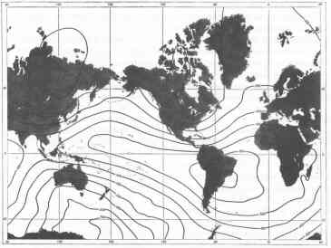
<br><b><font face="Arial,Helvetica"><font size=-1>From "The Airborne Magnetometer,"
by Homer Jensen</font></font></b>
<br><font face="Arial,Helvetica"><font size=-2>Copyright (C) June 1961
by Scientific American, Inc., all rights reserved</font></font></center>

<p><font face="Arial,Helvetica">(In terms of psychic consciousness, it
is interesting to note that Spiritism has flourished in Brazil, in spite
of opposition from the Catholic Church, perhaps more than in any other
nation. Brazilian spiritists, synthesizing modern European, native Indian,
and African culture, number over a third of Brazil's population and comprise
powerful interest groups with their own elected representatives in the
national legislature. There are entire towns in Brazil composed solely
of spiritists.)</font>
<p><font face="Arial,Helvetica">The areas of greatest geomagnetic intensity
center near the poles where readings are found in the .60-.70 gauss range.
Spacecraft at the altitudes and latitudes of the usual near-earth orbits
are generally not exposed to magnetic fields lower than those in Brazil.
However, spaceflights more than about one sixth the distance to the moon
enter a magnetic environment near-zero in intensity. It is still uncertain
precisely how these variations of magnetic field will effect the consciousness
of astronauts, as scientists are just beginning to explore the interactions
of electromagnetism on the mind and body.</font>
<p><font face="Arial,Helvetica">For nearly thirty years doctors in Austria,
West Germany and the Soviet Union have used a therapeutic technique known
as electrosleep to cure a wide variety of psychological problems related
to insomnia. A weak electric current (just enough to cause a tingling sensation)
is passed through the head by attaching electrodes over the closed eyes
and over the mastoid process (behind the ears). This induces an altered
state of consciousness, and eventually sleep.</font>
<p><font face="Arial,Helvetica">Over 500 articles about electrosleep have
been published in the Russian literature and a number of sophisticated
studies in Western Europe have produced evidence that the therapeutic process
is effective. However, American clinicians have remained very skeptical
about all electronic therapeutic processes, which have long been associated
with medical quackery. (The unfortunate exception to this assumption is
electroshock therapy where powerful current -- 70 to 130 volts -- jolts
through a patient's brain causing convulsions, memory loss, temporary relief
of depression and other symptoms. No one is sure how or why it works.)</font>
<p><font face="Arial,Helvetica">In the last few years, American researchers
have shown a new interest in electrosleep. A number of favorable research
papers have been presented using electrosleep with humans and animals.
Improvements have been shown in cases of insomnia as well as in removing
neurotic and psychotic symptoms. The exact mechanisms are still unknown;
but it is quite clear, as we have already pointed out, that electromagnetic
brain fluctuations are involved in the basic rest and activity cycle.</font>
<p><font face="Arial,Helvetica">The problem of bio-electromagnetic interactions
is much more intrinsic than the comparatively simple question of brain
activity. The enormous role light plays in our daily lives is so obvious
we ordinarily overlook it. The most dramatic responses to light can be
observed in plants, upon which we are dependent for oxygen and nutrition.
The Swedish naturalist Carolus Linnaeus (1707-1780) first noticed that
various flowers opened at different hours and could actually be used as
a clock.</font>
<blockquote><b><font face="Arial,Helvetica">Linnaeus Flower Clock:</font></b>
<br><font face="Arial,Helvetica">6 a.m. Spotted Cat's Ear opens</font>
<br><font face="Arial,Helvetica">7 a.m. Afhan Marigold opens</font>
<br><font face="Arial,Helvetica">8 a.m. Mouse Ear Hawkweed opens</font>
<br><font face="Arial,Helvetica">9 a.m. Prickly Sowthistle closes</font>
<br><font face="Arial,Helvetica">10 a.m. Common Nipple Wort closes</font>
<br><font face="Arial,Helvetica">11 a.m. Star of Bethlehem opens</font>
<br><font face="Arial,Helvetica">12 noon Passion Flower opens</font>
<br><font face="Arial,Helvetica">1 p.m. Childing Pink closes</font>
<br><font face="Arial,Helvetica">2 p.m. Scarlet Pimpernel closes</font>
<br><font face="Arial,Helvetica">3 p.m. Hawkbit closes</font>
<br><font face="Arial,Helvetica">4 p. m. Small Bindweed closes</font>
<br><font face="Arial,Helvetica">5 p.m. White Water Lilly closes</font>
<br><font face="Arial,Helvetica">6 p.m. Evening Primrose opens</font></blockquote>
<font face="Arial,Helvetica">In nineteenth century Europe, formal gardens
were sometimes planted to form a clockface, with the flowers in each bed
blossoming at a different hour. On a sunny day one could tell the time
to within a half hour by glancing at the garden.</font>
<p><font face="Arial,Helvetica">We wake and sleep according to cycles of
light and darkness. Furthermore, our adrenal hormones, pineal hormones
(such as serotonin), and our sexual hormones all follow a twenty-four hour
circadian production cycle which changes with the seasons according to
the amount of available sunlight. Reflect for a moment you2&amp;#0;lf
just how much your consciousness is effected by sunlight and artifical
light in your environment in a church or temple in the forest on a bright
afternoon...in the moonlight...by the flickering firelight a lamplit room...just
after sunset...or in the dark. One of the things I love to do is get up
early in the morning, several hours before sunrise while it is still dark.
From a hilltop, I can silently watch the gentle conquest of darkness as
the earth turns and the birds, insects and the hormones flowing in my own
blood are all part of the music -- the planetary rotation raga. (The Hindu
musicians understood this perfectly well when they composed different pieces
of music to be played at different times of day.)</font>
<p><font face="Arial,Helvetica">In Robert O. Becker's opinion, electromagnetic
fields have enormous implications for understanding consciousness. He suggests
that the analog-synaptic aspect of the central nervous system is regulated
in part by electromagnetic interaction with the environment. His research
relating geomagnetic disturbances to psychiatric admission rates has already
been cited. In other studies he has indicated that geomagnetic disturbances
effect the behavior of patients on a psychiatric ward, and that magnetic
fields also have an effect on human reaction time.,</font>
<br>&nbsp;
<p><b><font face="Arial,Helvetica">Challenges to the Biological Identity
Model&nbsp;</font></b>
<p><font face="Arial,Helvetica">Ever since its eloquent expression in the
philosophy of Rene Descartes, dualism has been a feature of western philosophy
and cultural thought. While most physiologists implicitly subscribe to
the materialistic, biological indentity model of consciousness, many of
of the most promiment members of the field have opted for a cleancut dualism.
Wilder Penfield, the Canadian neurosurgeon whose experiments of electrical
stimulation of the brain were instrumental in developing our knowledge
of cortical functioning, ended a reknowned scientific career by renouncing
the biological identity principle:</font>
<blockquote><font face="Arial,Helvetica">In the end I conclude that there
is no good evidence, in spite of new methods, such as the employment of
stimulating electrodes, the study of conscious patients and the analysis
of epileptic attacks, that the brain alone can carry out the work that
the mind does. I conclude that it is easier to rationalize man's being
on the basis of two elements than on the basis of one.</font></blockquote>
<font face="Arial,Helvetica">Some neurophysiologists such as Sherrington,
Eccles, and Sperry have proceeded further in stating that mind can act
on brain directly.</font>
<center>
<p>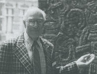
<br><b><font face="Arial,Helvetica"><font size=-1>Nobel laureate Sir John
Eccles</font></font></b>
<br><b><font face="Arial,Helvetica"><font size=-1>Parapsychological Association,
1976</font></font></b></center>

<p><font face="Arial,Helvetica">They have not specified, however, what
they mean by mind, nor by what mechanism mental organization can influence
brain function. This is the basic problem of dualism. Nevertheless, support
for the dualistic position has come from the logician and philosopher of
science, Karl Popper, who summarizes the crux of the argument against a
materialistic biological identity model:</font>
<p><font face="Arial,Helvetica">[Materialists suggest] that consciousness
is nothing but inner perception, perception of a second order, or perception
(scanning) of an activity of the brain by other parts of the brain. But
[they] skip and skim over the problem why this scanning should produce
consciousness or awareness, in the sense in which all of us are acquainted
with consciousness or awareness; for example, with the conscious, critical
assessment of a solution to a problem. And he never goes into the problem
of the difference between conscious awareness and physical reality.</font>
<p><font face="Arial,Helvetica">The monist materialist can respond -- as
philospher Thomas Hobbes did in refuting Descartes' dualism -- that there
is no reason why matter should not be capable of thinking. This formulation
is correct as far as it goes. If we conceive of matter vaguely at the start,
we cannot deny it the faculty of thought. But this essentially destroys
the mechanistic world view: in addition to the classical properties of
extension and motion, an entirely different sort of property is now being
ascribed to matter. The mechanistic claims of materialism are thereby fundamentally
changed, raising severe problems for conventional physical notions.&nbsp;</font>
<p><font face="Arial,Helvetica">Some leading physicists have gone even
further in their dissolution of the idea of matter. Under the influence
of Ernst Mach, a physicist who believed neither in matter nor in atoms,
and who proposed a theory of knowledge reminiscent of William James' radical
empiricism, idealistic interpretations of quantum mechanics have been put
forward. As Bertrand Russell has eloquently stated:</font>
<p><font face="Arial,Helvetica">It has begun to seem that matter, like
the Cheshire Cat, is becoming gradually diaphanous until nothing of it
is left but the grin, caused presumably, by amusement at those who still
think it is there.</font>
<br>&nbsp;
<p><br>
<center>
<p><b><font face="Arial,Helvetica">References</font></b></center>

<p><font face="Arial,Helvetica">. Since there are no pain receptors in
the brain itself, only the scalp needs to be anesthetized. While there
are regions of the brain that seem to elicit pain when stimulated, these
"pain centers" (i.e. in the limbic region) are simply the parts of the
brain activated by the pain receptors of the body.</font>
<p><font face="Arial,Helvetica">. Richard F. Thompson, <i>Foundations of
Physiological Psychology</i>. New York: Harper and Row, 1967.</font>
<p><font face="Arial,Helvetica">. Joseph E. Bogen, "The Other Side of the
Brain: An Appositional Mind," in Robert Ornstein (ed.), <i>The Nature of
Human Consciousness</i>. San Francisco: W. H. Freeman, 1973. pp. 101-125.
An anthology of scientific, philosophical and literary material.</font>
<p><font face="Arial,Helvetica">. A. T. W. Simeons, M.D., <i>Man's Presumptuous
Brain</i>. New York: E. P. Dutton, 1961. One of the most enjoyable and
knowledgeable studies of brain science. Even in an age of information-explosion,
still worth reading.</font>
<p><font face="Arial,Helvetica">. Barbara Brown, <i>New Body, New Mind</i>.
New York: Harper and Row, 1974. The story of biofeedback research seen
through the eyes of one of the pioneer investigators.</font>
<p><font face="Arial,Helvetica">. The last two drugs are derived in the
body directly from serotonin -- and bufotenine is also the active ingredient
in the toads that are proverbally used in witches' brews.</font>
<p><font face="Arial,Helvetica">. Frank X. Barron, Murray Jarvik &amp;
Sterling Bunnell, Jr., "The Hallucinogenic Drugs," <i>Contemporary Psychology
Readings From Scientific American</i>. San Francisco: W. H. Freeman, 1971.
p. 305.</font>
<p><font face="Arial,Helvetica">. A. P. Krueger and S. Kotaka, "The Effects
of Air Ions on Brain Levels of Serotonin in Mice," <i>International Journal
of Biometeorology</i>, 13(1), 1969, 27.</font>
<p><font face="Arial,Helvetica">. Angela Longo, "'To Sleep; Perchance to
Dream?' A Neurochemical Study of the States of Sleep." Unpublished paper,
1971.</font>
<p><font face="Arial,Helvetica">. John N. Bliebtrau, <i>The Parable of
the Beast</i>. New York: Macmillan Company, 1968, p. 74.</font>
<p><font face="Arial,Helvetica">. Phillip Handler, ed., <i>Biology and
the Future of Man</i>. New York: Oxford University Press, 1970, pp. 59-60.
A survey of the life sciences sponsored by the National Academy of Sciences.</font>
<p><font face="Arial,Helvetica">. Frank Barr, "Melanin: The Organizing
Molecule," <i>Medical Hypotheses</i>, 11(1), 1983, 1-140.</font>
<p><font face="Arial,Helvetica">. Frank Barr, <i>What is Melanin?</i> Berkeley,
CA: Institute for the Study of Conscousness, 1983.</font>
<p><font face="Arial,Helvetica">. L. R. Squire, "Mechanisms of Memory,"
<i>Science</i>,
232, 1986, 1612-1619.&nbsp;</font>
<p><font face="Arial,Helvetica">. Michael A. Persinger, <i>The Paranormal:
Part I</i>. The Patterns. New York: MSS Information, 1974.&nbsp;</font>
<p><font face="Arial,Helvetica">. Michael A. Persinger, "Psi Phenomena
and Temporal Lobe Activity: The Geomagnetic Factor," in L. A. Henkel &amp;
R. E. Berger (eds.), <i>Research in Parapsychology 1988</i>. Metuchen,
NJ: Scarecrow Press, 1989. pp. 124-5.</font>
<p><font face="Arial,Helvetica">. P. Gloor, A. Olivier, L. F. Quensey,
F. Andermann, &amp; S. Horowitz, "The Role of the Limbic System in Experiential
Phenomena of Temporal Lobe Epilepsy," <i>Annals of Neurology</i>, 12, 1982,
pp. 129-144.</font>
<p><font face="Arial,Helvetica">. P. Gloor, "Role of the Human Limbic System
in Perception, Memory and Affect: Lessons from Temporal Lobe Epilepsy,"
in B. K. Doane &amp; K. E. Livingston (eds.), <i>The Limbic System</i>.
New York: Raven, 1986. pp. 159-169.</font>
<p><font face="Arial,Helvetica">. Gloor, et al.</font>
<p><font face="Arial,Helvetica">. As a person who has experienced seizures,
I am interested in understanding the extent to which one's orientation
to the field of psi research and the philosophical issues related to consciousness
may be shaped by neurological propensities.</font>
<p><font face="Arial,Helvetica">. D. M. Bear &amp; P. Fedio, "Quantitative
Analysis of Interictal Behavior in Temporal Lobe Epilepsy," <i>Archives
of Neurology</i>, 34, 1977, 454-467.</font>
<p><font face="Arial,Helvetica">. W. P. Spratling, <i>Epilepsy and Its
Treatment</i>. Philadelphia: W. B. Saunders, 1904.</font>
<p><font face="Arial,Helvetica">. Edmund Gurney, F. W. H. Myers &amp; Frank
Podmore, <i>Phantasms of the Living</i>. London: Trubner, 1886.</font>
<p><font face="Arial,Helvetica">. Eleanor Sidgewick, "Phantasms of the
Living," <i>Proceedings of the Society for Psychical Research</i>, 33,
1922, 23-429.</font>
<p><font face="Arial,Helvetica">. Michael Persinger &amp; G. B. Schaut,
"Geomagnetic Factors in Subjective Telepathic, Precognitive, and Post-Mortem
Experiences," <i>Journal of the American Society for Psychical Research</i>,
82, 1988, 217-235.</font>
<p><font face="Arial,Helvetica">. Persinger, "Psi Phenomana and Temporal
Lobe Activity," p. 127.</font>
<p><font face="Arial,Helvetica">. J. R. Stevens, "Sleep is for Seizures:
A New Interpretation of the Role of Phasic Ocular Events in Sleep and Wakefulness,"
in M. B. Sterman &amp; M. N. Shouse (eds.), <i>Sleep and Epilepsy</i>.
New York: Academic Press, 1982, pp. 249-264.</font>
<p><font face="Arial,Helvetica">. Michael A. Persinger &amp; K. Makarec,
"Temporal Lobe Epilepsy Signs and Correlative Behaviors Displayed by Normal
Populations," <i>Journal of General Psychology</i>, 114, 1987, 179-195.</font>
<p><font face="Arial,Helvetica">. Persinger, "Psi Phenomana and Temporal
Lobe Activity," p. 131.</font>
<p><font face="Arial,Helvetica">. Albert Krueger, "Are Negative Ions Good
for You?" <i>New Scientist</i>, June 14, 1973, 668.</font>
<p><font face="Arial,Helvetica">. Albert P. Krueger, "Preliminary Consideration
of the Biological Significance of Air Ions," <i>Scientia</i>, September
1969.</font>
<p><font face="Arial,Helvetica">. A. P. Krueger &amp; S. Kotaka, "The Effects
of Air Ions on Brain Levels of Serotonin in Mice," <i>International Journal
of Biometeorology</i>, 13(1), 1969, 31-44.</font>
<p><font face="Arial,Helvetica">. Albert P. Krueger, P. C. Andriese &amp;
S. Kotaka, "Small Air Ions: Their Effect on Blood Levels of Serotonin in
Terms of Modern Physical Theory," <i>International Journal of Biometeorology</i>,
12(3), 225-239.</font>
<p><font face="Arial,Helvetica">. Krueger &amp; Kotaka, "The Effects,"
p. 33.</font>
<p><font face="Arial,Helvetica">. Krueger, "Are Negative Ions Good for
You?"</font>
<p><font face="Arial,Helvetica">. N. Robinson &amp; F. S. Dirnfield, "The
lonization of the Atmosphere As a Functioning of Meterological Elements
and of Various Sources of Ions," <i>International Journal of Biometeorology</i>,
3(2), March 1963.</font>
<p><font face="Arial,Helvetica">. A. Danon &amp; F. G. Sulman, "Ionizing
Effect of Winds of Ill Repute and Serotonin Metabolism," <i>Proceedings
of the Fifth International Biometerological Congress,</i> Sept. 1969.</font>
<p><font face="Arial,Helvetica">. Albert P. Krueger, "Biological Effects
of lonization of the Air," in S. W. Tromp (ed.), <i>Progress in Biometerology</i>.
Amsterdam: Swets and Zeitlinger, 1974, p. 32.</font>
<p><font face="Arial,Helvetica">. A. P. Krueger, personal communication
to the author.</font>
<p><font face="Arial,Helvetica">. Walter M. Elsasser, "The Earth as Dynamo,"
<i>Scientific
American</i>, May 1958. This article provides a basic explanation of the
earth's magnetic field.</font>
<p><font face="Arial,Helvetica">. James B. Beal, "The Emergence of Paraphysics:
Research and Applications," in E. D. Mitchell &amp; J. White (eds.), <i>Psychic
Explorations</i>. New York: Putmans, 1974.</font>
<p><font face="Arial,Helvetica">. T. Dull &amp; B. Dull, "Uber die abhangigkeit
des Gesundheitszustandes von plotzlichen Eruptionen auf der Sonne und die
Existenz einer 27 taigigen Periode in den Sterbefillen," Virschows Archiv,
No. 293, 1934. This study is summarized in Michel Gauquelin, <i>The Scientific
Basis of Astrology</i>. New York: Stein and Day, 1969.</font>
<p><font face="Arial,Helvetica">. Howard Friedman, Robert O. Becker and
Charles Bachman, "Geomagnetic Parameters and Psychiatric Hospital Admissions,"
<i>Nature</i>,
200, November 16, 1963, 620-628.</font>
<p><font face="Arial,Helvetica">. Michael Persinger, "ELF Waves and ESP,"
<i>New
Horizons</i>, 1(5), January 1975, 232-235.</font>
<p><font face="Arial,Helvetica">. Michael A. Persinger, <i>The Paranormal.
Part II: Mechanisms and Models.</i> New York: M. S. S. Information Corp.,
1974.</font>
<p><font face="Arial,Helvetica">. Selco Tromp, "Review of the Possible
Physiological Causes of Dowsing," International Journal of Parapsychology,
10(4), 1968. Tromp, a Dutch researcher, has been the executive editor of
the <i>International Journal of Biometerology</i>.</font>
<p><font face="Arial,Helvetica">. Y. Rocard, "Actions of a Very Weak Magnetic
Gradient: The Reflex of the Dowser," in Madeleine F. Barnothy (ed.), <i>Biological
Effects of Magnetic Fields</i>. New York: Plenum Press, 1969.</font>
<p><font face="Arial,Helvetica">. Ibid., p. 281.</font>
<p><font face="Arial,Helvetica">. A double blind is a basic experimental
technique in which neither the subject nor the experimenter know whether
a particular condition is part of the control or the test group, i.e. whether
the magnetic field is on or off.</font>
<p><font face="Arial,Helvetica">. Tromp, op. cit.</font>
<p><font face="Arial,Helvetica">. Yurij A. Kholodov, "Electromagnetic Fields
and the Brain," <i>Impact: of Science on Society</i>, 24(4), October 1974,
291-297. Kholodov is one of the Soviet researchers in the area of biomagnetic
interactions. This issue of Impact, published by UNESCO, was devoted to
the international developments in the "parasciences."</font>
<p><font face="Arial,Helvetica">. Yuri Kholodov, "The Brain and the Magnetic
Field," <i>Journal of Paraphysics</i>, 6(4), 1972, 144-147. This article
provides a more detailed description of Kholodov's experiments. Several
other articles in this issue of the Journal of Paraphysics, published in
England by Benson Herbert, deal with bio-magnetics.</font>
<p><font face="Arial,Helvetica">. A. S. Presman, <i>Electromagnetic Fields
and Life,</i> trans. by F. L. Sinclair, ed. by F. A. Brown. New York: Plenum
Press, 1970. This volume is a compendium of the Soviet work in bio-magnetics.
Presman is on the biophysics faculty at Moscow University.</font>
<p><font face="Arial,Helvetica">. Victor Yagodinsky, "The Magnetic Memory
of the Virus," <i>Journal of Paraphysics</i>, 6(4), 1972, 141. Translated
from the Russian.</font>
<p><font face="Arial,Helvetica">. M. Justa Smith, "The Influence on Enzyme
Growth by the 'Laying on of Hands,'" in <i>Dimensions of Healing</i>. Los
Altos, Ca.: Academy of Parapsychology and Medicine, 1973.</font>
<p><font face="Arial,Helvetica">. Svetlana Vinokurava, "Life in a Magnetic
Web," <i>Journal of Paraphysics</i>, 5(4), 1971, 135.</font>
<p><font face="Arial,Helvetica">. Homer Jensen, "The Airborn Magnetometer,"
<i>Scientific
American</i>, 202(6), June 1961, 152.&nbsp;</font>
<p><font face="Arial,Helvetica">. Pedro McGregor, <i>The Moon and Two Mountains</i>.
London: Souvenir Press, 1966. This book offers an unusual balance of emotional
involvement and sociological objectivity. The author, an educated journalist,
is also the founder of a spiritist church which is attempting to synthesize
the many conflicting strains of Brazilian magical tradition.</font>
<p><font face="Arial,Helvetica">. Charles C. Conley, "Effects of Near-Zero
Magnetic Fields on Biological Systems," <i>Biological Effects of Magnetic
Fields, Vol.2</i>.</font>
<p><font face="Arial,Helvetica">. R. R. Koegler, S. M. Hicks, L. Rogers
&amp; J. H. Barger, "A Preliminary Study in the Use of Electrosleep Therapy
in Clinical Psychiatry," in Norman L. Wulfson (ed.), <i>The Nervous System
and Electric Currents</i>. New York: Plenum Press, 1970. pp. 137-143. Not
satisfied with the quality of the European work, these American researchers
conducted their own study with encouraging results.&nbsp;</font>
<p><font face="Arial,Helvetica">. Gay Gaer Luce, <i>Biological Rhythms
in Human and Animal Physiology</i>. New York: Dover, 1971, pp. 120-132.
This is an unabridged version of a report originally prepared for the National
Institute of Mental Health.</font>
<p><font face="Arial,Helvetica">. John N. Ott, <i>Health and Light</i>.
Old Greenwich, Connecticut: Devin-Adair, 1973. Using the techniques of
time-lapse photography, this volume demonstrates the effects of light variations
on plants and points to similar responses in animals and people.</font>
<p><font face="Arial,Helvetica">. Robert O. Becker, "The Effect of Magnetic
Fields Upon the Central Nervous System," <i>Biological Effects of Magnetic
Fields, Vol. 2</i>, pp. 207-214.</font>
<p><font face="Arial,Helvetica">. Howard Friedman, Robert O. Becker &amp;
Charles H. Bachman, "Psychiatric Ward Behavior and Geophysical Parameters,"
<i>Nature</i>,
205, March 13, 1965, 1050-1052.</font>
<p><font face="Arial,Helvetica">. Howard Friedman, Robert O. Becker &amp;
Charles H. Bachman, "Effect of Magnetic Fields on Reaction Time Performance,"
<i>Nature</i>,
213, March 4, 1967, 949-950.</font>
<p><font face="Arial,Helvetica">. Wilder Penfield, <i>Mystery of the Mind.</i>
Princeton: Princeton University Press, 1975, p. 114.</font>
<p><font face="Arial,Helvetica">. Charles Sherrington, <i>Man On His Nature</i>.
New York: Macmillan, 1941.</font>
<p><font face="Arial,Helvetica">. John C. Eccles, <i>Facing Reality</i>.
New York: Springer-Verlag, 1970.</font>
<p><font face="Arial,Helvetica">. Roger W. Sperry, "Mental Phenomena as
Causal Determinants in Brain Function," in G. G. Globus, G. Maxwell &amp;
I. Savodnik (eds.), <i>Consciousness and the Brain</i>. New York: Plenum,
1976.</font>
<p><font face="Arial,Helvetica">. Karl R. Popper &amp; John C. Eccles,
<i>The
Self and Its Brain</i>. London: Routledge &amp; Kegan Paul, 1983, p. 98.</font>
<p><font face="Arial,Helvetica">. Bertrand Russell, "Mind and Matter,"
in <i>Portraits From Memory.</i> New York: Simon and Schuster, 1956, p.
145.&nbsp;</font></td>
</tr>
</table></center>

<center><b><font face="Arial,Helvetica"><font size=-1> 
 </font></font></b>
<br><b><font face="Arial,Helvetica"><font size=-1> 
 </font></font></b><font face="Arial,Helvetica"><a href="../index.html" ></a></font>
<p><b><font face="Arial,Helvetica"><font size=-1><a href="../index.htm" >Return
to <i>Roots of Consciousness</i> Contents</a></font></font></b></center>

</body>
</html>
